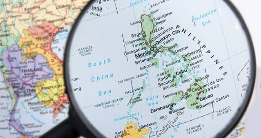
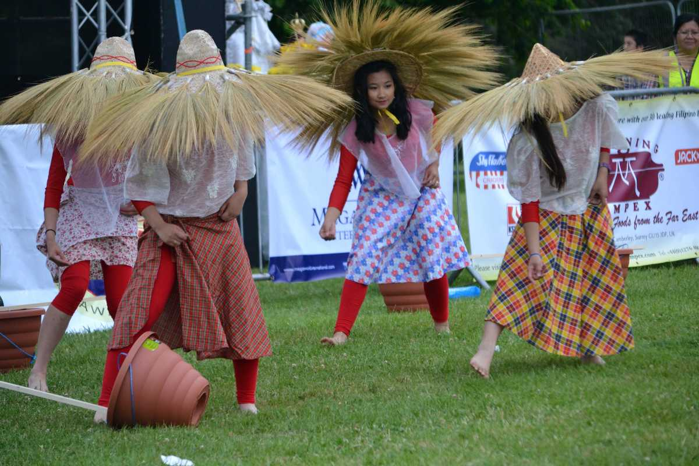

Day,
Month
00,
Year
00:
00:
00
AM
During his quest for a westward path to the Spice Islands in 1521, Ferdinand Magellan, a Portuguese navigator, discovered the Philippines. Local communities were contacted by the Spanish expedition under the command of Magellan, who was slain in the Battle of Mactan. The Spanish nevertheless made a comeback, and Miguel Lopez de Legazpi founded Cebu's first Spanish town in 1565, ushering in more than three centuries of Spanish occupation.
The Philippines is an island nation in Southeast Asia. The South China Sea borders it on the west and north, the Sulu Sea on the southwest, the Celebes Sea on the south, and the Philippine Sea on the east. The archipelago is roughly 1,150 miles (1,850 km) long from north to south and about 700 miles (1,130 km) wide from east to west at its southern base. The islands, once thought to be 7,107, were later discovered to be more, totaling over 7,600. Around 350 islands are at least one square mile (2.6 square kilometers) in size, and only about two-fifths of them are named. The major islands are grouped into Luzon (north and west), Visayas (middle), and Mindanao (south).
There are three distinct seasons in the Philippines' tropical marine climate: Tag-init (hot and dry), Tag-ulan (rainy), and
Tag-lamig (cool and dry). Typhoons frequently occur in the wet season.
Earthquakes and volcanic eruptions are common in the Philippines because of its placement in
the Pacific Ring of Fire. Tropical cyclones, or typhoons, frequently occur, particularly between June and November.
The Philippines is one of the most populous countries in Southeast Asia, with a population exceeding 110 million people. The Philippines has a youthful population, with 64% aged between 15 and 64, and over 30% below 14. In 2019, the average age for male household members was 37.68, and for females, it was 44.2. The youth are seen as crucial for economic recovery post-COVID-19 lockdowns.
The Philippines is home to a wide variety of ethnic groups. Among the principal groupings are the Tagalog, Cebuano, Ilocano, and Bisaya peoples.
The official languages of the multilingual nation are English and Filipino, which is based on Tagalog. Throughout the archipelago, many regional languages and dialects are spoken.
The Philippines is predominantly Roman Catholic, a legacy of over three centuries of Spanish colonization. There are also significant Muslim and Protestant minorities.
With industries including manufacturing, services, agriculture, and the expanding business process outsourcing (BPO) sector, the Philippines boasts a diversified economy.
The Philippines is a country where East and West cultures meet. The Filipino people are clearly of Asian descent, although they also have significant Western traditions. American colonizers, Spanish conquistadors, and Chinese traders all had an impact on the development of modern Filipino culture. Particularly when it comes to guests from the West, Filipinos are known for their warmth. Filipinos are passionate and enthusiastic about life in a way that seems more Latin than Asian due to their close ties to Spanish culture.

Lively multicolored events that take place across the archipelago. These celebrations, which feature traditional dances, music, and costumes, frequently incorporate religious, cultural, and historical components.
Filipino food is a combination of American, Spanish, Chinese, and indigenous flavors. A variety of street meals and dishes like lechon, sinigang, and adobo is popular.